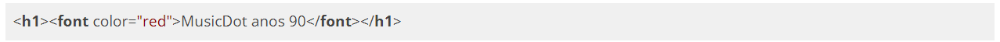
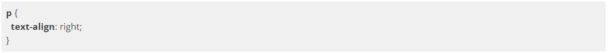
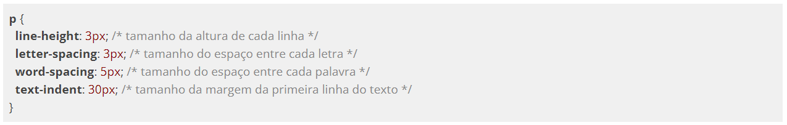
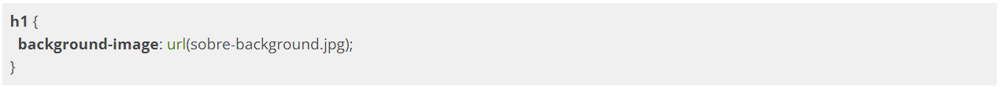
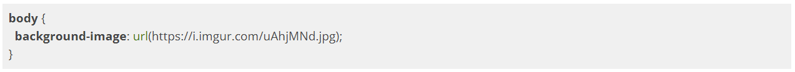
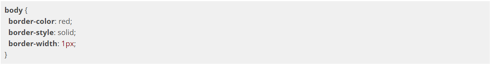
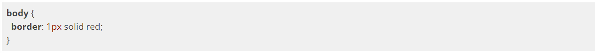
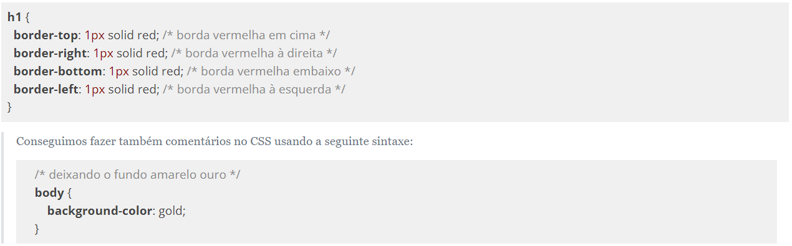

Um h1, por exemplo, por padrão é apresentado em negrito numa fonte maior. Parágrafos de texto são espaçados entre si, e assim por diante. Isso quer dizer que o navegador tem um estilo padrão para as tags que usamos.
Antigamente, isso era feito no próprio HTML. Caso houvesse a necessidade de um título ser vermelho, era só fazer:

Além da tag
<font>, várias outras tags de estilo existiam. Mas isso é passado. Hoje em dia tags HTML para estilo são má prática e jamais devem ser usadas, são interpretadas apenas para o modo de compatibilidade.
Em seu lugar, surgiu o CSS (Cascading Style Sheet ou folha de estilos em cascata), que é uma outra linguagem, separada do HTML, com objetivo único de cuidar da estilização da página. A vantagem é que o CSS é bem mais robusto que o HTML para estilização, como veremos.
Sintaxe e inclusão de CSS
A sintaxe do CSS tem estrutura simples: é uma declaração de propriedades e valores separados por um sinal de dois pontos ":", e cada propriedade é separada por um sinal de ponto e vírgula ";" da seguinte maneira:
O elemento que receber essas propriedades será exibido com o texto na cor azul e com o fundo amarelo. Essas propriedades podem ser declaradas de três maneiras diferentes.
Atributo style
A primeira delas é com o atributo
style no próprio elemento:
Mas tínhamos acabado de discutir que uma das grandes vantagens do CSS era manter as regras de estilo fora do HTML. Usando esse atributo
style não parece que fizemos isso.
A tag style
A outra maneira de se utilizar o CSS é declarando suas propriedades dentro de uma tag
<style>.
Como estamos declarando as propriedades visuais de um elemento em outro lugar do nosso documento, precisamos indicar de alguma maneira a qual elemento nos referimos. Fazemos isso utilizando um seletor CSS. É basicamente uma forma de buscar certos elementos dentro da página que receberão as regras visuais que queremos.
No exemplo a seguir, usaremos o seletor que pega todas as tags p e altera sua cor e background:
O código dentro da tag
<style> indica que estamos alterando a cor e o fundo de todos os elementos com tag p. Dizemos que selecionamos esses elementos pelo nome de sua tag, e aplicamos certas propriedades CSS apenas neles.
Revisando então a estrutura de uso do CSS:
Algumas propriedades contém "subpropriedades" que modificam uma parte específica daquela propriedade que vamos trabalhar, sendo sua sintaxe:
No exemplo abaixo, em ambos os casos, trabalhamos com a propriedade
text, que estiliza a aparência do texto do seletor informado. Podemos especificar quais propriedades específicas do texto queremos modificar, no caso text-align o alinhamento do texto, e com text-decoration colocamos o efeito de sublinhado.
Arquivo externo
A terceira maneira de declararmos os estilos do nosso documento é com um arquivo externo com a extensão
.css. Para que seja possível declarar nosso CSS em um arquivo à parte, precisamos indicar em nosso documento HTML uma ligação entre ele e a folha de estilo (arquivo com a extensão .css).
A indicação de uso de uma folha de estilos externa deve ser feita dentro da tag
<head> de um documento HTML:
E dentro do arquivo
estilos.css colocamos apenas o conteúdo do CSS:

Propriedades tipográficas e fontes
Da mesma maneira que alteramos cores, podemos alterar o texto. Podemos definir fontes com o uso da propriedade
font-family.
A propriedade
font-family pode receber seu valor com ou sem aspas dependendo da sua composição, por exemplo, quando uma fonte tem o nome separado por espaço.
É possível, e muito comum, declararmos o nome de algumas fontes que gostaríamos de verificar se existem no computador, permitindo que tenhamos um controle melhor da forma como nosso texto será exibido.
Em nosso projeto, as fontes não têm ornamentos, vamos declarar essa propriedade para todo o documento por meio do seu elemento
body:
Nesse caso, o navegador verificará se a fonte "Helvetica" está disponível e a utilizará para exibir os textos de todos os elementos do nosso documento que, por cascata, herdarão essa propriedade do elemento
body.
Caso a fonte "Helvetica" não esteja disponível, o navegador verificará a disponibilidade da próxima fonte declarada, no nosso exemplo a "Lucida Grande". Caso o navegador não encontre também essa fonte, ele solicita qualquer fonte que pertença à família "sans-serif", declarada logo a seguir, e a utiliza para exibir o texto, não importa qual seja ela.
Alinhamento e decoração de texto
Já vimos uma série de propriedades e subpropriedades que determinam o tipo e estilo da fonte. Vamos conhecer algumas maneiras de alterarmos as disposições dos textos.
No exemplo a seguir vamos mudar o alinhamento do texto com a propriedade
text-align.

O exemplo determina que todos os parágrafos da nossa página tenham o texto alinhado para a direita. Também é possível determinar que um elemento tenha seu conteúdo alinhado ao centro ao definirmos o valor
center para a propriedade text-align, ou então definir que o texto deve ocupar toda a largura do elemento aumentando o espaçamento entre as palavras com o valor justify. Por padrão o texto é alinhado à esquerda, com o valor left, porém é importante lembrar que essa propriedade propaga-se em cascata.
É possível configurar também uma série de espaçamentos de texto com o CSS:

Imagem de fundo
A propriedade
background-image permite indicar um arquivo de imagem para ser exibido ao fundo do elemento. Por exemplo:

Com essa declaração, o navegador vai requisitar um arquivo
sobre-background.jpg, que deve estar na mesma pasta do arquivo CSS onde consta essa declaração. Mas podemos também passar um endereço da web para pegar imagens remotamente:

Bordas
As propriedades do CSS para definirmos as bordas de um elemento nos apresentam uma série de opções. Podemos, para cada borda de um elemento, determinar sua cor, seu estilo de exibição e sua largura. Por exemplo:

A propriedade
border tem uma forma resumida para escrever os mesmos estilos que adicionamos acima, mas de uma maneira mais simples:

Para que o efeito da cor sobre a borda surta efeito, é necessário que a propriedade
border-style tenha qualquer valor diferente do padrão none.
Podemos também falar em qual dos lados do nosso elemento queremos a borda usando a subpropriedade que indica lado:
